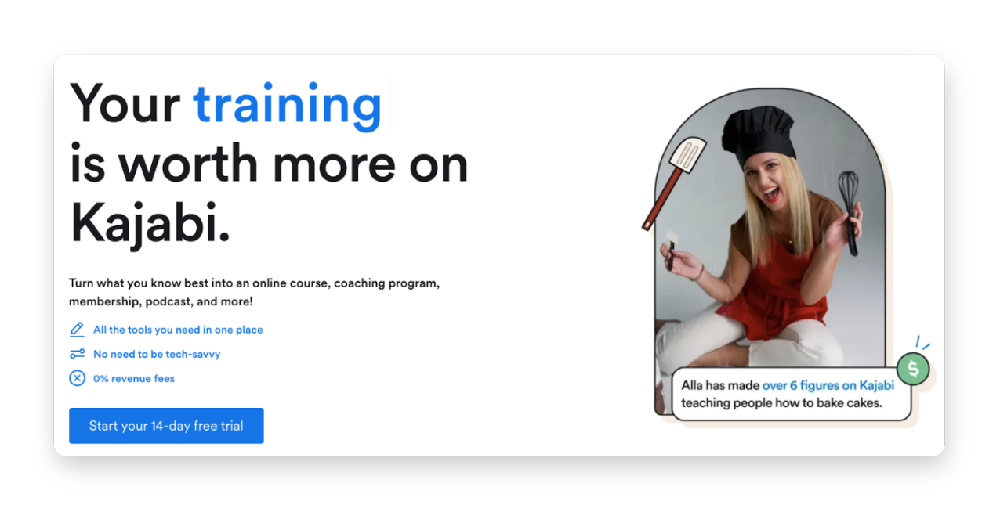
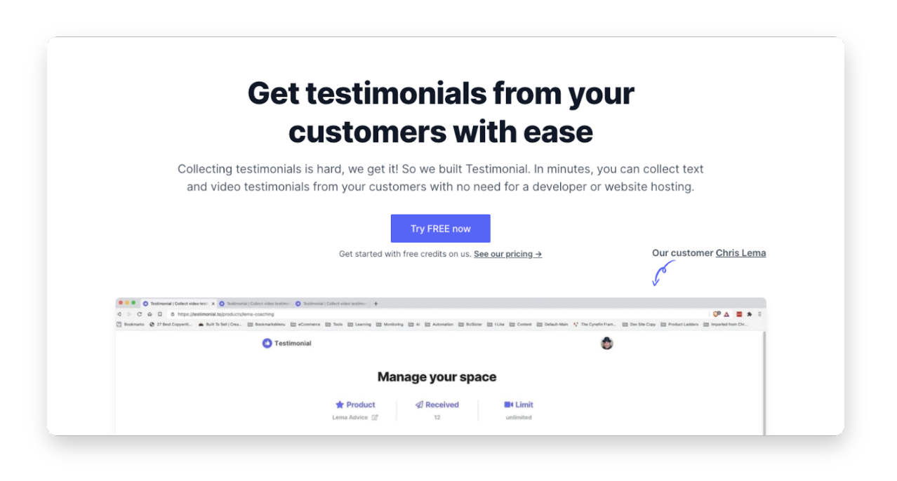
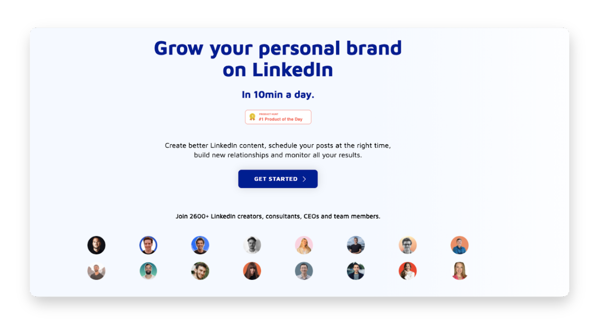
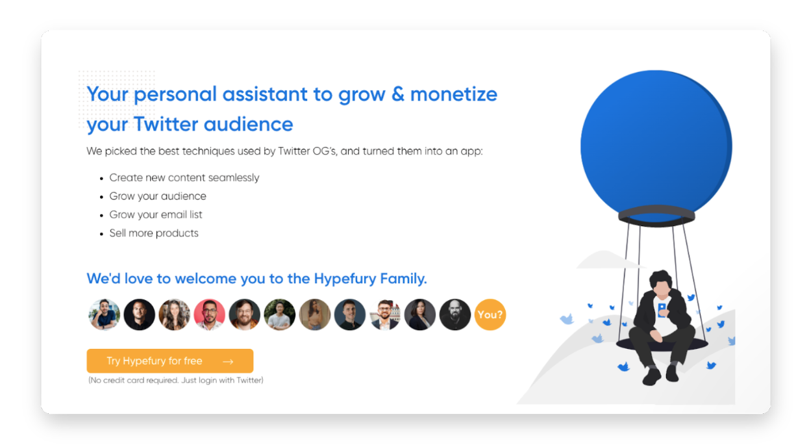

"Which digital tools should I be using?" is a question I’m often asked.
As solopreneurs, we're constantly juggling responsibilities, from client work to marketing our business. And with countless digital tools available, finding the right ones to support our solo venture can be overwhelming.
But I've done the legwork for you.
I've compiled a list of the tools I have used to scale my one-person business’s revenue to over $3M in 3 years.
What makes these tools exceptional?
- They cater specifically to the unique needs of solopreneurs, helping streamline your workflow and maximize your productivity.
- Each tool has a free version or trial period, so you can test the waters before fully committing.
- These tools are user-friendly and easy to integrate into your daily routine, no matter your level of tech-savviness.
Disclaimer: This article contains affiliate links, which let me make a small commission on sales at no cost to you. I only recommend products I use myself.
My digital tools as a solopreneur
- Kajabi
- Stripe
- Testimonial
- Taplio
- Hypefury
- Fathom
- Loom
Here’s an in-depth breakdown of each tool:
Best website and course hosting combo

Kajabi is the ultimate platform for course creators, coaches, and solopreneurs who want to share their knowledge with the world.
This all-in-one tool simplifies the entire process of creating, marketing and selling online courses. As an enterprise-level user, I can vouch for its efficiency and ease of use.
It bundles my website, landing pages, email provider, forms, CRM, and online courses together. You can’t beat the efficiency.
Features
- Course Creation and Management: Kajabi's intuitive course builder lets you easily create and organize your content into modules and lessons.
- Website and Landing Page Builder: Centralize your online presence with Kajabi's fully customizable website builder. Its capabilities go way beyond other course-based site builders like Thinkific.
- Email Marketing Integration: Craft personalized email campaigns, automate follow-ups, and track your open rates and click-through rates (though I recommend using a standalone tool for this).
- Sales and Payment Processing: Kajabi simplifies the sales process by offering secure payment processing and flexible pricing options. You can also integrate directly with Stripe, as I do.
- Customer Relationship Management (CRM): Segment your students, monitor their progress, and engage with them from one place.
- Analytics and Reporting: Make data-driven decisions to enhance your content and grow your course.
> Go to Kajabi’s website
Best payment processor for solopreneurs
Solopreneurs need reliable and secure payment processors to handle transactions from different sources. Stripe provides the ultimate payment solution that makes it easy to accept payments (no matter how much revenue you have).
It’s an all-in-one platform that lets you manage and process customer payments worldwide. Easy integration with the most popular eCommerce platforms — and its developer-friendly tools — make it ideal for solopreneurs who want to fully customize their payment method.
It also makes the invoicing process effortless. You can add your client’s info, bill your services, and email it directly to them via the billing menu.
And the payouts? Every weekday — I’m not held hostage while someone loans my money out for interest (like other payment processors do).
Features
- Seamless Integration: Stripe integrates effortlessly with nearly every major eCommerce platform. This means you can easily add Stripe as your payment gateway without any technical headaches.
- Global Payment Processing: With support for over 135 currencies, Stripe lets you accept payments from customers worldwide. Plus, it offers local payment methods, ensuring a smooth transaction experience for your international clientele.
- Customizable Checkout Experience: Stripe's developer tools let you create a tailor-made checkout experience for your customers. You can design your payment forms to match your brand identity, ensuring a cohesive and professional look across your entire website.
- Fraud Prevention: Stripe employs advanced machine learning algorithms to detect and prevent fraud in real-time. This means you can focus on growing your business, knowing your transactions are secure and protected.
- Transparent Pricing: Stripe offers a pay-as-you-go pricing model with no hidden fees, making it an affordable option for solopreneurs of any income. You only pay when you make a sale, and the fees are automatically deducted from your transactions.
> Go to Stripe’s website
Best social proof tool for solopreneurs

Testimonial makes gathering and showcasing your client testimonials incredibly easy. This amplifies your credibility and builds trust with potential clients and customers. I’ve been using Testimonial to effortlessly collect and display reviews for The LinkedInOS, and the increased conversions have been outstanding.
My process is simple:
- Midway through the LinkedInOS, I ask students for testimonials
- I embed my Testimonial page directly into the module
- Students either film a review or write it up
- When I approve it, my landing page automatically displays it via the Wall of Love
Features
Testimonial’s unique features make it the go-to choice for solopreneurs looking to bolster their social proof:
- Streamlined Testimonial Collection: Testimonial simplifies the process of gathering testimonials by providing a unique link that can be shared with your clients. Making it easy for them to submit their feedback.
- Customizable Testimonial Widgets: Showcase your testimonials on your website with fully customizable widgets that match your branding and style. Select from several layouts, colors, and fonts to create a seamless integration.
- One-Click Social Sharing: Amplify your testimonials by sharing them on social media platforms with a single click.
- In-Depth Analytics: Track the performance of your testimonials with Testimonial.to's built-in analytics.
> Go to Testimonial’s website
Best LinkedIn tool for rapid growth and monetization

It’s no secret that LinkedIn is my bread and butter. While I’ve grown an impressive audience on other platforms, no other channel has created nearly as much revenue for me.
That said, I’m a busy solopreneur. And Taplio automates much of the tedium required to scale on Linkedin — far beyond your usual social planning tool.
Taplio also has a built-in post review system. This lets you see exactly how your post will appear (crucial for making sure your hook shows above the “read more” cutoff).
Features
Here’s why Taplio’s my go-to for LinkedIn:
- Content Scheduler: Plan, draft, and schedule your LinkedIn content to maintain a consistent online presence and engage with your growing network. You can even schedule carousels thanks to its plug-in.
- Advanced Analytics: Taplio provides insight into your LinkedIn performance, helping you understand which content resonates with your audience (and how your network is influenced over time).
- CRM Integration: Easily sync your LinkedIn contacts and conversations with your favorite CRM tool to keep track of your leads and maintain organized follow-ups.
> Go to Taplio’s website
Best Twitter scheduling and analytics tool

Designed to optimize and amplify your Twitter presence, Hypefury has quickly become my go-to for all things Twitter. From scheduling tweets to maximizing engagement, Hypefury has helped me grow my audience, increase my reach, and build genuine connections on the platform.
While there are other Twitter tools, Hypefury is easily the most robust and intuitive. Even the least tech-savvy solopreneurs can use it to scale their Twitter presence.\
I use it to:
- Automatically retweet posts with good engagement
- Automatically plug my newsletter (also based on engagement)
- Remove retweets after 24 hours and keep my feed clean
- Repurpose successful content for LinkedIn
- Get inspired by other successful posts
Features
Here are the core features that make Hypefury stand out from the crowd:
- Tweet Scheduling and Automation: Hypefury lets you schedule tweets in advance, so you can maintain a consistent presence on Twitter without being glued to your screen. Plus, its automation features ensure your evergreen content is regularly shared with your audience.
- Analytics and Insights: Hypefury provides detailed analytics on your performance, helping you understand your top-performing content and refine your strategy. Use these insights to make data-driven decisions to improve your engagement and grow your following.
- Content Library: Hypefury's content library feature lets you store and organize your best tweets, making it easy to repost your most engaging content.
- Thread Builder: Its intuitive thread builder makes it easy to make threads (which is usually a huge pain).
> Go to Hypefury’s website
Best privacy-compliant web analytics for solopreneurs
Fathom is a privacy-focused web analytics tool perfect for solopreneurs who prioritize both data insights and customer privacy. Google Analytics (the most popular analytics tool) is difficult to use and understand, but I’ve found Fathom Analytics to be incredibly intuitive.
It takes less than two minutes to set up and provides a full understanding of your website's performance without compromising visitor trust (or privacy laws).
A solopreneur’s website is their base of operations, so it's crucial to understand its performance while respecting your users’ privacy. Fathom is by far the best solution for meeting both of these goals.
Features
Fathom offers a range of core features that make it an indispensable tool for solopreneurs:
- Privacy-Compliant Tracking: Fathom ensures your website analytics adhere to privacy regulations like GDPR, CCPA, and PECR. It does not use cookies or collect any personal data, letting you gain valuable insight while respecting your visitors' privacy.
- Simple, Easy-To-Understand Dashboard: Fathom presents your website's data in a clean, uncluttered interface, making it easy to interpret your analytics at a glance.
- Lightweight and Fast-Loading: Fathom's code snippet is incredibly lightweight, so adding it to your website won't slow it down.
> Go to Fathom’s website
Best screen recording tool
Loom is the asynchronous video messaging platform that has transformed the way I communicate with clients, collaborators, and my audience. Designed to simplify communication, Loom lets you record and share videos of your screen, voice, and face in a few clicks.
I used it to help create my online courses.
All I had to do is:
- Install the Loom plugin
- Open my presentation
- Start talking
It’s saved me a ton of money (and time) when building out my courses.
Features
Loom’s features are incredibly useful for solopreneurs:
- Easy Recording: Effortlessly record videos of your screen, webcam, or both. Whether you're creating a tutorial, providing feedback, or sending a personalized message, Loom makes it easy.
- Instant Sharing: Once you've recorded your video, Loom generates a shareable link you can send to anyone. No need to worry about large file sizes or compatibility issues — your recipients can watch your video instantly on any device.
- Video Library: Stores all your recordings in a neatly organized video library, making it easy to access and manage your content. Plus, you can password-protect your videos for added security.
- Engagement Analytics: Track video performance with Loom's built-in reporting. Watch view counts, viewer information, and engagement data to optimize your video content and enhance communication.
- Integrations: Loom seamlessly integrates with popular productivity tools like Slack, Trello, and Google Drive, so you can easily incorporate video messaging into your existing workflow.
> Go to Loom’s website
Getting started with solopreneur tools
As a solopreneur, you face the unique challenge of handling multiple responsibilities alone. And with so many digital tools available, choosing the right one can be tricky.
Here's a quick recap of the tools we covered (and their primary uses):
- Kajabi: An all-in-one platform for creating, marketing, and selling online courses and memberships.
- Stripe: A secure and easy-to-use payment processing solution for your online business.
- Testimonial: A tool for collecting and displaying customer testimonials on your website.
- Taplio: A comprehensive LinkedIn scheduling, analytics, and CRM tool.
- Hypefury: A powerful Twitter scheduling tool that automates content posting and optimizes engagement.
- Fathom: A privacy-focused analytics platform to track your website performance without compromising user privacy.
- Loom: A tool that simplifies communication by letting you record and share videos of your screen, voice, and face.
Now that you know the tools, it's time to put them to work — choose the tools best suited to your solo business and get started.
I’ll see you out there.